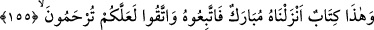
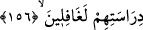

suresinin sonundaki “her şeyi açıklayıcı” (Yusuf, 12/111) ifadesi de bizim şeriatımızda
ictihad olmadığına delalet etmez. Çünkü “açıklama” usulde, ictihad ise furû’dadır.
Dalaletten doğru yola ileten “bir hidayet ve rahmet” yani, ona inanıp içindekilerle
amel edenler için azabdan bir kurtuluş “olmak üzere Musa’ya Kitab’ı” Tevrat’ı
“verdik ki” İsrailoğulları “Rab’lerinin huzuruna varacaklarına” ölümden sonra
dirilmeye, mükâfât ve cezâya “inansınlar.” Burada işaret edilen kavmin yahudiler
olduğu Musa (a.s.)’ın adının zikredilmesinden anlaşılmaktadır.
155. İşte bu (Kur’an), bizim indirdiğimiz mübarek bir kitaptır. Buna uyun ve
Allah’tan korkun ki size merhamet edilsin.
“İşte bu” Kur’an “mübarek” dinî ve dünyevî bir çok faydaları olan “bir kitabdır.
Onu da biz indirdik” İnkârcıların iddia ettikleri gibi Rasûlullah (s.a.) tarafından
uydurulmuş değildir.
et-Te’vîlâtü’n-necmiyye’de şöyle denilmiştir: Rasûlullah (s.a.)’ e hitâben senin için
mübarek ve bereketli bir kitabdır. Çünkü, senin ahlâkın Kur’an kılınarak o senin kalbine
indirilmiştir. Ümmetin için de bereketli bir kitabdır. Çünkü Kur’an, onlarla Rableri
arasındaki iptir (hablullah). Ona sımsıkı sarılan Allah’a vasıl olur.
“O’na (Kur’an’a) uyun:” O’nun buyrukları ile amel edin. “Ve” ona muhalefet
etmekten “sakının ki” Kur’an’a tâbi olmanız ve onun gereklerini yerine getirmenizden
dolayı “size rahmet edilsin.”
156. “Kitap, yalnız bizden önceki iki topluluğa (hıristiyanlara ve yahudilere)
indirildi, biz ise onların okumasından gerçekten habersizdik” demeyesiniz diye;
Yani ey Mekke halkı, onu size indirdik ki kıyamet günü “Kitap,” yani Tevrat ve İncil
“yalnız bizden önceki iki topluluğa” yahudilere ve hristiyanlara “indirildi” bize kitab
indirilmedi “biz ise onların okumasından habersizdik.” O kitapları okuyamıyor,
dillerinden anlamıyorduk “demeyesiniz.”
Özel olarak Tevrat ve İncil’in zikredilmesi belki de o gün semâvî kitablar içinde en
çok bilinenlerin onlar olduğu içindir.
Âyette yahudi ve hristiyanların yerini tutmak üzere “Onların okumasından”
ifadesinde çoğul zamiri kullanılmış; “O ikisinin okumasından” buyurulmamıştır. Çünkü